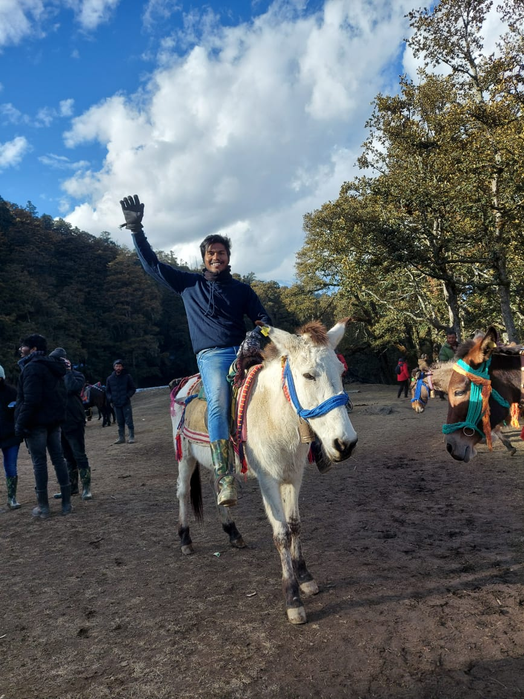

Hey there, internet wanderer!👋
I'm HARI PRASAD MUNIGANTI, a software enthusiast.I'm into competitive
programming, web development, and a
bit of machine learning—because why not add some AI magic?
This website’s look is inspired by the glorious Hacker News🧡.
-
I watch a ton of movies🎬 and series🍿. Seriously, I might have an IMDb problem.
-
I plan to read all the books 📚... but so far, I’ve only read a few. Trying to improve! #Goals
-
Check out my interests and life updates on the INTERESTS and BLOG pages. You might find
something cool😎 or at least funny😂.
-
Feel free to stalk—erm, follow me on my social handles listed on the CONTACT
page. Let's
connect, share memes, and maybe even talk code🤓.
Dive in, explore, and enjoy the chaos. And hey, don’t forget to reach out. Always up for a chat about tech,
movies, or
the meaning of life (42, obviously).
Catch you on the flip side!🚀
P.S. I promise I’m way more interesting & fun than this description can convey😜.